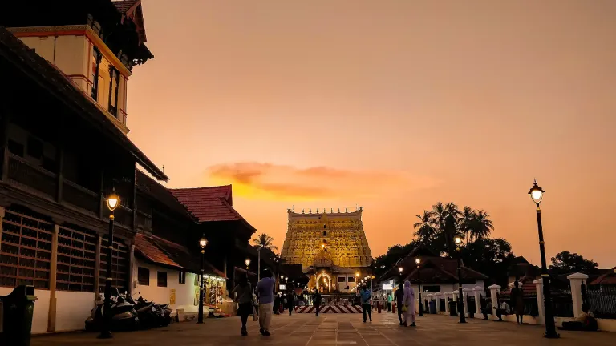
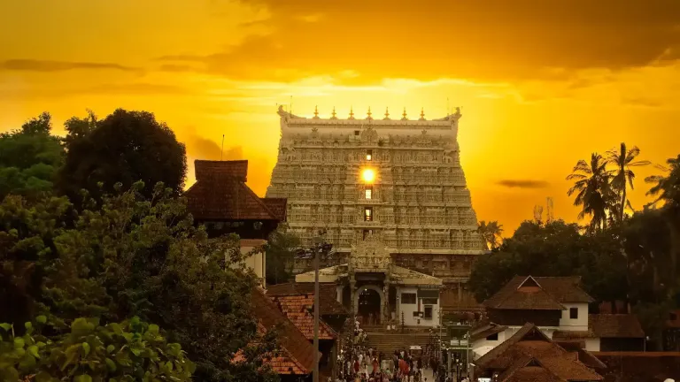
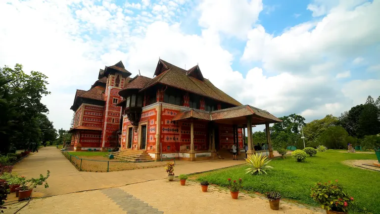
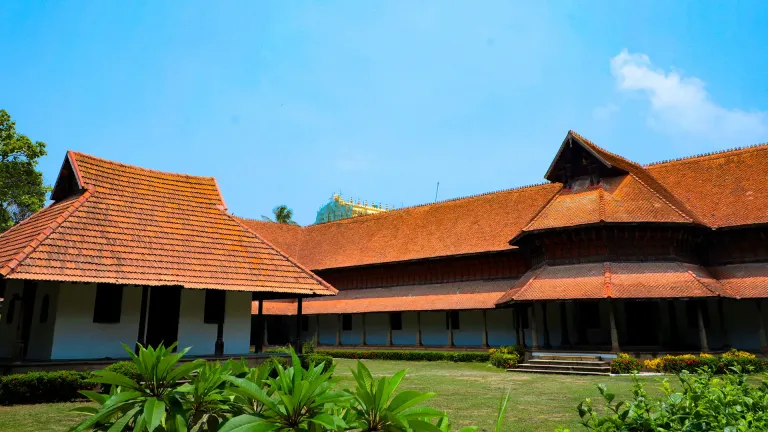

Temple Quarter
Sree Padmanabhaswamy Temple
See the landmark gopuram and East Fort setting. Entry, dress and photography rules are specific, so confirm current guidance directly before visiting.

Travancore heritage, temple architecture, museums, performance spaces and the main southern gateway to Varkala and Kovalam.
Thiruvananthapuram, also called Trivandrum, combines the administrative energy of Kerala's capital with the architectural and artistic legacy of Travancore. Its railway station and international airport make it a useful arrival or departure point for the southern coast.

See the landmark gopuram and East Fort setting. Entry, dress and photography rules are specific, so confirm current guidance directly before visiting.

Explore a 19th-century museum building and collections that introduce Kerala's artistic, archaeological and royal heritage.

Visit the palace beside East Fort to see intricate timber architecture and objects connected with Maharaja Swathi Thirunal.
The city grew around the Sree Padmanabhaswamy Temple and became the capital of Travancore. Royal patronage helped shape its palaces, museums, music and public institutions, while Thiruvananthapuram later continued as the capital of Kerala after the state was formed in 1956.
Official city guideThiruvananthapuram is a practical arrival or departure base for Varkala and Kovalam. Add a city night when museum visits, the East Fort heritage area or an easier flight connection matters more than another beach stay.